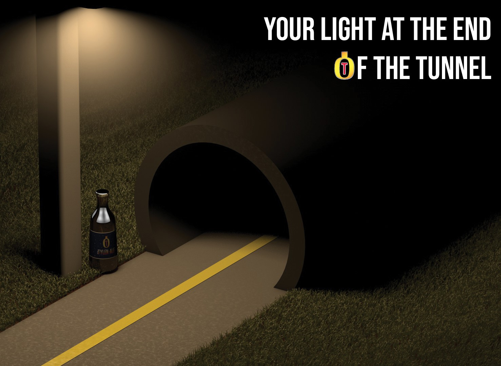

About Tylen-Ale
 Tylen-Ale is a collaborative project between Fosters Australian Beer and Tylenol Liquid PM. The 2 owners decided to team up to create a beer that is affordable, tastes great and reduces the chances of you getting a hangover the next day. After months of hard planning, their dream came true and Tylen-Ale was born. Made using only the freshest locally grown crops, Tylen-Ale is the perfect beer for finishing all those chores that keep piling up. Tylen-Ale also has only 70 calories per bottle so even if your on a diet, You can enjoy a cold Tylen-Ale anytime without worrying about packing on the pounds. So next time you want an ice cold beer there is only one logical option, choose Tylen-Ale.
Why Choose Tylen-Ale
If you ever find yourself strolling down the beer isle in your local supermarket, looking for a delicious beer to quench your everlasting thirst, you might ask yourself, Why Tylen-Ale? Well its quite simple, Tylen-Ale is a medicinal lager that not only eliminates your devastating thirst, but it also uses the healing power in Tylenol to make you feel 100% the next day, no matter how many you drink. Drinking Tylen-Ale completely removes all hangovers, aches, and pains so you can be an fully functional alcoholic.